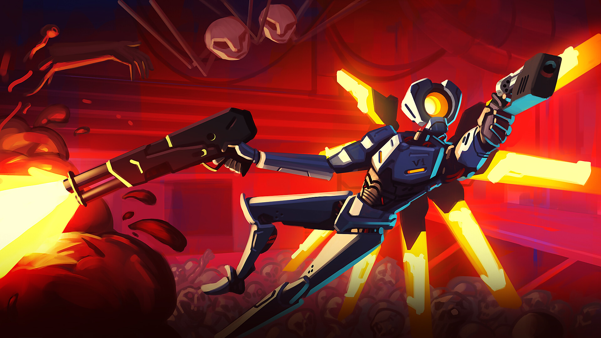
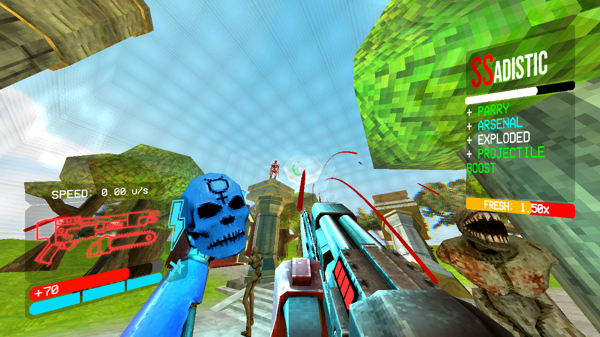

SOBRE
ULTRAKILL é um jogo de tiro em primeira pessoa old school, frenético e ultraviolento, desenvolvido por Arsi "Hakita" Patala e publicado pela New Blood Interactive. Você joga como V1, uma máquina de combate movida a sangue que se aventurou nas profundezas do Inferno após a extinção da humanidade. O Inferno está repleto de demônios e almas atormentadas, fontes de sangue que você deve dilacerar para se reabastecer e sobreviver.


A jogabilidade de ULTRAKILL combina elementos de jogos de tiro clássicos como Quake, jogos de tiro modernos como Doom e jogos de ação como Devil May Cry. O jogo enfatiza a movimentação, a esquiva de ataques e o uso eficiente de armas de fogo em seus níveis no estilo arena. Além disso, a saúde do jogador só pode ser restaurada ao se banhar no sangue dos inimigos, exigindo que o jogador adote um estilo de jogo agressivo que o coloca frequentemente em combate corpo a corpo com seus oponentes.
O prólogo e o primeiro ato do jogo foram lançados em acesso antecipado em 3 de setembro de 2020, e uma demo gratuita está disponível na Steam. Você pode acessar a página do jogo aqui.